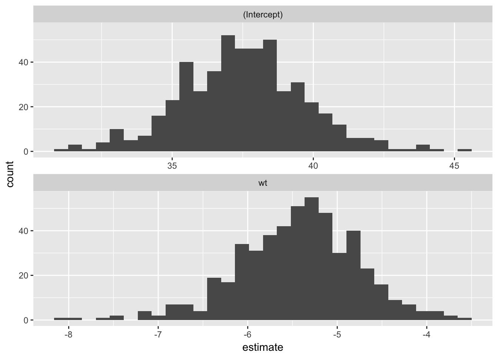
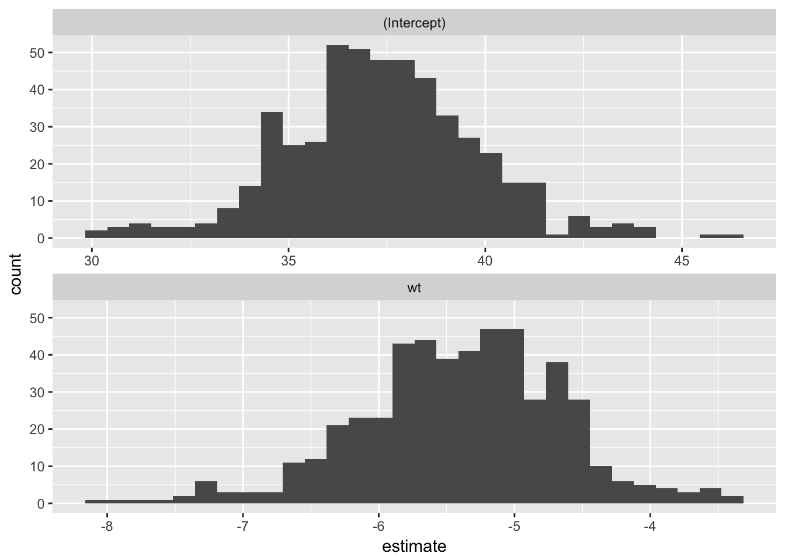

The lazysample package provides functions that implement several resampling methods including bootstrapping and cross-validation.
The building block of these methods is the lazy_sample object.
library("lazysample")
smpl <- lazy_sample(mtcars, 1:10)Instead of computing the samples immediately, when the lazy sample object is created it stores a quosure, which is an unevaluated expression and its environment, and the indexes to extract.
smpl$quo
#> <quosure: global>
#> ~mtcars
smpl$idx
#> [1] 1 2 3 4 5 6 7 8 9 10The sample is only lazily computed when it is needed.
smpl$sample
#> mpg cyl disp hp drat wt qsec vs am gear carb
#> Mazda RX4 21.0 6 160.0 110 3.90 2.620 16.46 0 1 4 4
#> Mazda RX4 Wag 21.0 6 160.0 110 3.90 2.875 17.02 0 1 4 4
#> Datsun 710 22.8 4 108.0 93 3.85 2.320 18.61 1 1 4 1
#> Hornet 4 Drive 21.4 6 258.0 110 3.08 3.215 19.44 1 0 3 1
#> Hornet Sportabout 18.7 8 360.0 175 3.15 3.440 17.02 0 0 3 2
#> Valiant 18.1 6 225.0 105 2.76 3.460 20.22 1 0 3 1
#> Duster 360 14.3 8 360.0 245 3.21 3.570 15.84 0 0 3 4
#> Merc 240D 24.4 4 146.7 62 3.69 3.190 20.00 1 0 4 2
#> Merc 230 22.8 4 140.8 95 3.92 3.150 22.90 1 0 4 2
#> Merc 280 19.2 6 167.6 123 3.92 3.440 18.30 1 0 4 4Lists and list-columns in data frames can easily be used for tidy model evaluation. The function lazy_sample_idx produces a data frame with a list-column of resample objects. For example, this resamples from the mtcars data frame using a simple non-parametric bootstrap.
library("tidyverse")
#> Loading tidyverse: ggplot2
#> Loading tidyverse: tibble
#> Loading tidyverse: tidyr
#> Loading tidyverse: readr
#> Loading tidyverse: purrr
#> Loading tidyverse: dplyr
#> Conflicts with tidy packages ----------------------------------------------
#> filter(): dplyr, stats
#> lag(): dplyr, stats
idx <- rerun(500, sample.int(nrow(mtcars), replace = TRUE))
smpl <- lazy_sample_idx(mtcars, idx)These bootstrap samples can be used to generate confidence intervals for coefficients of a model.
map(smpl$sample, ~ lm(mpg ~ wt, data = .$sample)) %>%
map_df(broom::tidy) %>%
ggplot(aes(x = estimate)) +
geom_histogram() +
facet_wrap(~ term, ncol = 1, scale = "free_x")
While various resampling methods can be implemented manually, this package provides functions for many common methods: including common fbootstrapping and cross-validation methods.
The bootstrap function in the package implements bootstrap resampling.
boot <- bootstrap(mtcars, R = 500)
map(boot$sample, ~ lm(mpg ~ wt, data = .$sample)) %>%
map_df(broom::tidy) %>%
ggplot(aes(x = estimate)) +
geom_histogram() +
facet_wrap(~ term, ncol = 1, scale = "free_x")
The function crossv_kfold implements k-fold cross validation.
cv_5k <- crossv_kfold(mtcars, 5)
models_5k <- map(cv_5k$train, ~ lm(mpg ~ wt, data = .$sample))
err_cv5k <- tibble(
rmse = mean(map2_dbl(models_5k, cv_5k$test,
function(x, y) modelr::rmse(x, y$sample))),
model = "CV 5-fold")The function crossv_mc implements Monte Carlo cross validation in which the data is repeatedly randomly split into training and test sets.
cv_mc <- crossv_mc(mtcars, 50, frac = 0.2)
models_mc <- map(cv_mc$train, ~ lm(mpg ~ wt, data = .$sample))
err_mc <- tibble(
rmse = mean(map2_dbl(models_mc, cv_mc$test,
function(x, y) modelr::rmse(x, y$sample))),
model = "CV Monte Carlo")The function crossv_loo implements leave-one-out (LOO) cross validation in which the data are split into \(n\) training/test pairs in which one observation is dropped at a time.
cv_loo <- crossv_loo(mtcars)
models_loo <- map(cv_loo$train, ~ lm(mpg ~ wt, data = .$sample))
err_loo <- tibble(
rmse = mean(map2_dbl(models_loo, cv_loo$test,
function(x, y) modelr::rmse(x, y$sample))),
model = "CV-LOO")bind_rows(err_cv5k, err_mc, err_loo)
#> # A tibble: 3 x 2
#> rmse model
#> <dbl> <chr>
#> 1 3.221937 CV 5-fold
#> 2 2.987785 CV Monte Carlo
#> 3 2.517436 CV-LOOInstallation
lazysample is not on CRAN. You can install the development version with
# install.packages("devtools")
devtools::install_github("jrnold/lazysample")